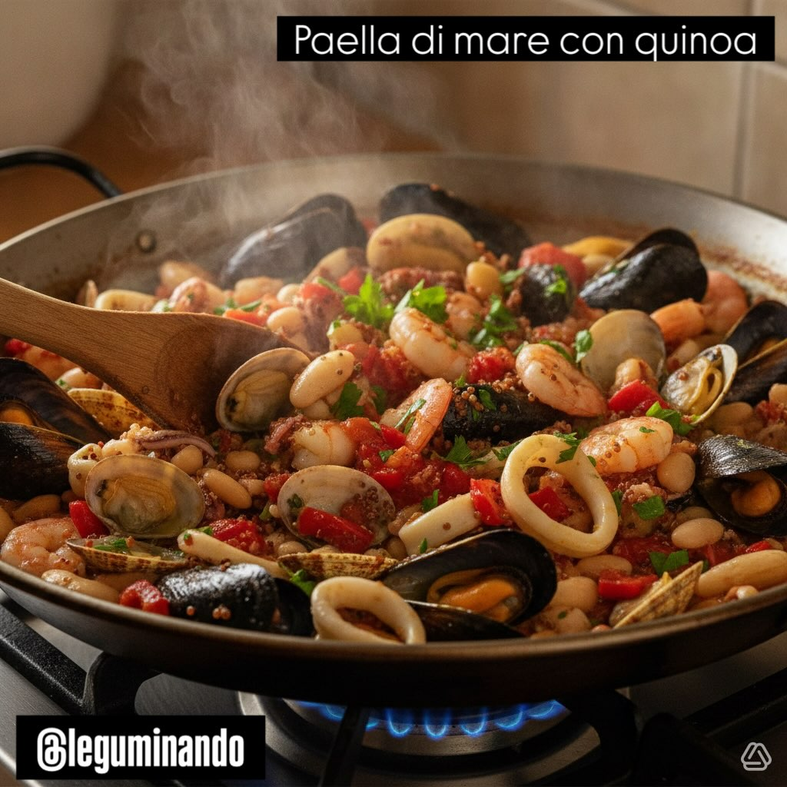

Paella di mare rivisitata con quinoa e fagioli cannellini
Una rivisitazione estiva della classica paella spagnola: quinoa croccante, frutti di mare freschi e fagioli cannellini cremosi, tutto in un unico piatto colorato e profumato.
Ingredienti
- 300 g quinoa cruda
- 400-500 g mix frutti di mare (cozze, vongole, gamberi, calamari)
- 400 g fagioli cannellini cotti
- 1 cipolla (tritata)
- 1 peperone rosso (a cubetti)
- 2 pomodori maturi (o 200 g pelati)
- 2 spicchi d'aglio (tritati)
- 800 ml brodo di pesce
- 1 cucchiaino paprika dolce
- ½ cucchiaino zafferano (o curcuma)
- 3 cucchiai olio extravergine d'oliva
- Prezzemolo fresco, sale, pepe nero
- Succo di ½ limone (opzionale)
👨🍳 Preparazione
- Sciacqua la quinoa sotto acqua fredda corrente per eliminare la saponina, poi scola bene.
- Scalda l'olio in una paellera o padella larga e soffriggere la cipolla e l'aglio a fuoco medio per 3-4 minuti.
- Aggiungi il peperone, la paprika e lo zafferano. Mescola e cuoci per 2 minuti per far insaporire le spezie.
- Unisci la quinoa e tostala per 1-2 minuti, mescolando continuamente per evitare che bruci.
- Versa 700 ml di brodo caldo (tenendone da parte 100 ml), copri e cuoci a fuoco basso per 12-15 minuti.
- A metà cottura incorpora i pomodori a pezzetti e i fagioli cannellini scolati, mescolando delicatamente.
- Quando la quinoa è quasi pronta (ancora leggermente al dente), distribuisci i frutti di mare sulla superficie. Copri e cuoci 4-6 minuti; scarta le cozze o vongole rimaste chiuse.
- Aggiusta di sale e pepe, spruzza il succo di limone se desiderato, cospargi di prezzemolo tritato e lascia riposare 2 minuti prima di servire.
Seafood Paella Revisited with Quinoa and Cannellini Beans
A summer reimagining of the classic Spanish paella: crispy quinoa, fresh seafood and creamy cannellini beans, all in one colourful and aromatic dish.
Ingredients
- 300 g raw quinoa
- 400-500 g mixed seafood (mussels, clams, prawns, squid)
- 400 g cooked cannellini beans
- 1 onion (chopped)
- 1 red pepper (diced)
- 2 ripe tomatoes (or 200 g tinned)
- 2 garlic cloves (minced)
- 800 ml fish stock
- 1 teaspoon sweet paprika
- ½ teaspoon saffron (or turmeric)
- 3 tablespoons extra virgin olive oil
- Fresh parsley, salt, black pepper
- Juice of ½ lemon (optional)
👨🍳 Preparation
- Rinse the quinoa under cold running water to remove saponins, then drain well.
- Heat the oil in a paella pan or wide skillet and sauté the onion and garlic over medium heat for 3-4 minutes.
- Add the pepper, paprika and saffron. Stir and cook for 2 minutes to bloom the spices.
- Add the quinoa and toast for 1-2 minutes, stirring constantly to prevent burning.
- Pour in 700 ml of hot stock (keeping 100 ml aside), cover and cook over low heat for 12-15 minutes.
- Halfway through cooking, fold in the diced tomatoes and drained cannellini beans, stirring gently.
- When the quinoa is almost done (still slightly al dente), distribute the seafood over the surface. Cover and cook 4-6 minutes; discard any mussels or clams that remain closed.
- Season with salt and pepper, squeeze lemon juice if desired, sprinkle with chopped parsley and let rest 2 minutes before serving.
Paella de Mar Revisitada con Quinoa y Judías Cannellini
Una reimaginación veraniega de la clásica paella española: quinoa crujiente, mariscos frescos y judías cannellini cremosas, todo en un plato único colorido y aromático.
Ingredientes
- 300 g quinoa cruda
- 400-500 g mix de mariscos (mejillones, almejas, gambas, calamares)
- 400 g judías cannellini cocidas
- 1 cebolla (picada)
- 1 pimiento rojo (en cubos)
- 2 tomates maduros (o 200 g en conserva)
- 2 dientes de ajo (picados)
- 800 ml caldo de pescado
- 1 cucharadita de pimentón dulce
- ½ cucharadita de azafrán (o cúrcuma)
- 3 cucharadas de aceite de oliva virgen extra
- Perejil fresco, sal, pimienta negra
- Zumo de ½ limón (opcional)
👨🍳 Preparación
- Enjuaga la quinoa bajo agua fría corriente para eliminar la saponina, luego escurre bien.
- Calienta el aceite en una paellera o sartén ancha y sofríe la cebolla y el ajo a fuego medio durante 3-4 minutos.
- Añade el pimiento, el pimentón y el azafrán. Remueve y cuece 2 minutos para que suelten aroma las especias.
- Agrega la quinoa y tóstala 1-2 minutos, removiendo continuamente para que no se queme.
- Vierte 700 ml de caldo caliente (reservando 100 ml), tapa y cocina a fuego lento durante 12-15 minutos.
- A mitad de cocción incorpora los tomates en dados y las judías cannellini escurridas, removiendo con suavidad.
- Cuando la quinoa esté casi lista (aún ligeramente al dente), distribuye los mariscos sobre la superficie. Tapa y cuece 4-6 minutos; descarta los mejillones o almejas que queden cerrados.
- Corrige de sal y pimienta, exprime limón si lo deseas, espolvorea perejil picado y deja reposar 2 minutos antes de servir.
Paella do Mar Revisitada com Quinoa e Feijão Cannellini
Uma reimaginação verã da clássica paella espanhola: quinoa crocante, mariscos frescos e feijão cannellini cremoso, tudo num prato único colorido e aromático.
Ingredientes
- 300 g quinoa crua
- 400-500 g mix de mariscos (mexilhões, amêijoas, camarões, lulas)
- 400 g feijão cannellini cozido
- 1 cebola (picada)
- 1 pimento vermelho (em cubos)
- 2 tomates maduros (ou 200 g enlatados)
- 2 dentes de alho (picados)
- 800 ml caldo de peixe
- 1 colher de chá de paprika doce
- ½ colher de chá de açafrão (ou cúrcuma)
- 3 colheres de sopa de azeite extra virgem
- Salsa fresca, sal, pimenta preta
- Sumo de ½ limão (opcional)
👨🍳 Preparação
- Lava a quinoa sob água fria corrente para remover as saponinas, depois escoa bem.
- Aquece o azeite numa paellera ou frigideira larga e refoga a cebola e o alho em lume médio durante 3-4 minutos.
- Adiciona o pimento, a paprika e o açafrão. Mexe e cozinha 2 minutos para as especiarias libertarem aroma.
- Junta a quinoa e tosta 1-2 minutos, mexendo continuamente para não queimar.
- Deita 700 ml de caldo quente (reservando 100 ml), tapa e cozinha em lume brando durante 12-15 minutos.
- A meio da cozedura incorpora os tomates aos cubos e o feijão cannellini escorrido, mexendo delicadamente.
- Quando a quinoa estiver quase pronta (ainda ligeiramente al dente), distribui os mariscos sobre a superfície. Tapa e cozinha 4-6 minutos; deita fora os mexilhões ou amêijoas que permaneçam fechados.
- Corrige o sal e a pimenta, espreme limão se desejares, polvilha salsa picada e deixa repousar 2 minutos antes de servir.
Meeresfrüchte-Paella neu interpretiert mit Quinoa und Cannellini-Bohnen
Eine sommerliche Neuinterpretation der klassischen spanischen Paella: knusprige Quinoa, frische Meeresfrüchte und cremige Cannellini-Bohnen, alles in einem farbenfrohen und aromatischen Gericht.
Zutaten
- 300 g rohe Quinoa
- 400-500 g Meeresfrüchte-Mix (Muscheln, Venusmuscheln, Garnelen, Tintenfisch)
- 400 g gekochte Cannellini-Bohnen
- 1 Zwiebel (gehackt)
- 1 rote Paprika (gewürfelt)
- 2 reife Tomaten (oder 200 g Dosentomaten)
- 2 Knoblauchzehen (gehackt)
- 800 ml Fischbrühe
- 1 Teelöffel süßes Paprikapulver
- ½ Teelöffel Safran (oder Kurkuma)
- 3 Esslöffel natives Olivenöl extra
- Frische Petersilie, Salz, schwarzer Pfeffer
- Saft von ½ Zitrone (optional)
👨🍳 Zubereitung
- Quinoa unter kaltem fließendem Wasser abspülen, um Saponine zu entfernen, dann gut abtropfen lassen.
- Öl in einer Paellapfanne oder breiten Pfanne erhitzen und Zwiebel sowie Knoblauch bei mittlerer Hitze 3-4 Minuten anschwitzen.
- Paprika, Paprikapulver und Safran zugeben. Umrühren und 2 Minuten garen, damit die Gewürze aromatisieren.
- Quinoa zugeben und 1-2 Minuten rösten, dabei ständig rühren, damit nichts anbrennt.
- 700 ml heiße Brühe angießen (100 ml zurückbehalten), zudecken und bei niedriger Hitze 12-15 Minuten kochen lassen.
- Nach der Hälfte der Garzeit gewürfelte Tomaten und abgetropfte Cannellini-Bohnen unterheben, dabei vorsichtig umrühren.
- Wenn die Quinoa fast gar ist (noch leicht bissfest), Meeresfrüchte auf der Oberfläche verteilen. Zudecken und 4-6 Minuten garen; geschlossene Muscheln oder Venusmuscheln wegwerfen.
- Mit Salz und Pfeffer abschmecken, Zitronensaft nach Belieben zugeben, gehackte Petersilie streuen und 2 Minuten ruhen lassen, bevor serviert wird.
Παέγια Θαλασσινών με Κινόα και Φασόλια Cannellini
Μια καλοκαιρινή επανεκτίμηση της κλασικής ισπανικής παέγιας: τραγανή κινόα, φρέσκα θαλασσινά και κρεμώδη φασόλια cannellini, όλα σε ένα πολύχρωμο και αρωματικό πιάτο.
Συστατικά
- 300 g ωμή κινόα
- 400-500 g μείγμα θαλασσινών (μύδια, αχιβάδες, γαρίδες, καλαμάρια)
- 400 g μαγειρεμένα φασόλια cannellini
- 1 κρεμμύδι (ψιλοκομμένο)
- 1 κόκκινη πιπεριά (σε κύβους)
- 2 ώριμες ντομάτες (ή 200 g κονσέρβα)
- 2 σκελίδες σκόρδο (ψιλοκομμένες)
- 800 ml ζωμό ψαριού
- 1 κουταλάκι του γλυκού γλυκιά πάπρικα
- ½ κουταλάκι του γλυκού σαφράν (ή κουρκουμάς)
- 3 κουταλιές της σούπας εξαιρετικό παρθένο ελαιόλαδο
- Φρέσκο μαϊντανό, αλάτι, μαύρο πιπέρι
- Χυμός από ½ λεμόνι (προαιρετικά)
👨🍳 Εκτέλεση
- Ξεπλύνετε την κινόα κάτω από τρεχούμενο κρύο νερό για να αφαιρέσετε τις σαπωνίνες, μετά στραγγίστε καλά.
- Ζεστάνετε το ελαιόλαδο σε μια παέγια ή σε ένα φαρδύ τηγάνι και σοτάρετε το κρεμμύδι και το σκόρδο σε μέτρια φωτιά για 3-4 λεπτά.
- Προσθέστε την πιπεριά, την πάπρικα και το σαφράν. Ανακατέψτε και μαγειρέψτε 2 λεπτά για να αρωματιστούν τα μπαχαρικά.
- Προσθέστε την κινόα και καβουρντίστε 1-2 λεπτά, ανακατεύοντας συνεχώς για να μην καεί.
- Περιχύστε 700 ml ζεστό ζωμό (κρατώντας 100 ml στην άκρη), καλύψτε και μαγειρέψτε σε χαμηλή φωτιά για 12-15 λεπτά.
- Στη μέση του μαγειρέματος ενσωματώστε τις ντομάτες σε κύβους και τα στραγγισμένα φασόλια cannellini, ανακατεύοντας απαλά.
- Όταν η κινόα είναι σχεδόν έτοιμη (ακόμα ελαφρώς al dente), κατανείμετε τα θαλασσινά στην επιφάνεια. Καλύψτε και μαγειρέψτε 4-6 λεπτά· πετάξτε όσα μύδια ή αχιβάδες παραμείνουν κλειστά.
- Διορθώστε αλάτι και πιπέρι, πιέστε λεμόνι αν θέλετε, πασπαλίστε ψιλοκομμένο μαϊντανό και αφήστε να ξεκουραστεί 2 λεπτά πριν σερβίρετε.